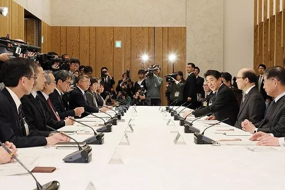
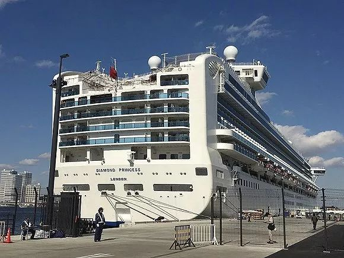
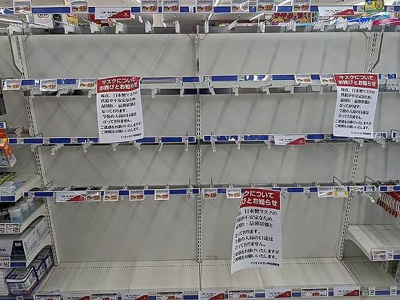
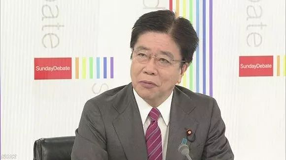

肺炎日记|2月3日: 武汉大量疑似患者获收治 医疗措施是关键
原文链接 备份链接 【财新网】（记者 丁捷 黄姝伦 宿慧娴）新型冠状病毒疫情持续升温，新增确诊人数以千位计。截至2月2日24时，全国确诊病例累计17205例，新增确诊病例超过七成集中在湖北省；全国疑似病例累计21558例，追踪到密切接触 …
 图片来源：共同社
图片来源：共同社
记者：田思奇 编辑：曾宇
“
多位日本专家学者一直呼吁，比防控边境以减少病毒输入更迫切的，是尽早为不可避免的国内疫情扩散做好防治和医疗准备。
”
1月底，和田耕治希望日本在奥运会前有足够的时间来防御新冠肺炎。
“我们可能会得到更多有关病毒传染风险和重病风险的信息，所以我们还可以做准备，”这位国际医疗福祉大学公众卫生学教授1月29日对路透社说，“我们还能做一些控制传染的预防措施。我希望东京奥运会能如期举行。”
和田耕治曾在2018年参与撰写一篇论文，审视2020年东京奥运会期间因游客涌入日本带来的可能健康风险。当时的论文中，麻疹、风疹等可通过疫苗预防的疾病以及食物和水传播疾病，被视为最大的风险。
这些最好不要兑现的“预言”还没成真，最大的风险却已在现实中存在——新型冠状病毒感染的肺炎（COVID-19）。
2月16日，在日本确诊首例新冠肺炎患者整整一个月后，日本全国12地按原计划举行了马拉松大赛，多地参赛者均有过万之众。在疫情中戴着口罩奔跑的人们和即将主办奥运会的日本，可能正迎来另一场“抗疫”马拉松。

图片来源：日本首相官邸
16日晚，日本政府专家组会议虽未给出“日本处于患者迅速增加的‘感染期’”的判断，但确认“感染正处于早期，之后还会进一步发展”的共识。截至这一天，算上横滨港“钻石公主”号邮轮上的355人，日本已确诊新冠肺炎患者总计413例，是中国以外确诊人数最多的地区。
更让日本人忧心的是，最近确诊的多起病例“感染路径不明”，无法追踪病毒在日本的传播。
日本厚生劳动大臣加藤胜信称，疫情“已经发生变化”，新冠肺炎“事实上已开始在日本流行”，“从现在开始有必要准备设想患者增加局面的对策”——这和政府一个月前的措辞已不可同日而语。日本经济新闻2月17日一则报道称，当下，日本应对疫情的重心已从口岸封堵转向医疗体制的完善。
数周来，政府“注重边境管控、却未及时加强国内防疫”的措施为日本专家学者诟病，而把来自多国的3700人长期隔离在邮轮上的做法也备受国际舆论压力。
世界卫生组织（WHO）高级顾问进藤奈邦子2月14日在横滨出席新冠病毒传染病紧急研讨会时干脆说：“现在全球担心的，是日本了。”
如果只看1月确诊的病例，日本国内只有居住或到访过中国的游客、以及接触游客较多的导游和司机被传染新冠肺炎。
1月16日确诊的首例患者是一名居住在日本的中国男子。他1月3日在武汉期间曾发烧，6日返回日本，10日住院，一周后出院。再之后一周，日本并无新增病例。
日本政府1月21日认为，当时“并未处于感染迅速蔓延的阶段”，仅要求入境者配合提供信息。首相安倍晋三23日称，“将尽全力防止疫情扩大”，要求强化口岸防控。厚劳相加藤胜信表示，将对所有中国抵日航班旅客加强检疫。
随着春节假期到来，又有5名中国游客在日本确诊。这时，日本也开始在国内启动防疫措施，于1月28日将新冠肺炎列为“指定感染症”，进而可依法对患者实施强制住院、限制上班等措施。
一天后，关西地区出现第一起国内人传人病例。大阪确诊一位大巴导游，她与28日确诊的奈良县巴士司机曾在同辆大巴上服务来自武汉的游客。
在日本政府包机从武汉带回的日侨中也出现确诊病患。截至1月30日，包机日侨乘客中5人感染，其中4人无明显症状。
安倍晋三曾在1月24日的春节贺词中邀请中国人在假期和奥运会期间赴日旅游，但随着疫情蔓延，“期待大量中国游客到访日本”的说法在网上遭到质疑，随后日本外务省致歉称言论“不合时宜”，在30日将其从日本驻华大使馆官网删除。
在世卫组织宣布将始于武汉的疫情列为“国际关注的突发公共卫生事件”后，日本在1月31日将“指定感染症”相关法规的实施日期从2月7日提前到2月1日。也就是从2月1日起，日本采取罕见边境管控，开始拒绝曾在湖北逗留的外国人入境。
然而，由于春节假期已有不少中国游客访日，且病毒人传人已获证实，一些学者对上述政策的实际效果表示怀疑，认为在“防”的同时也要加紧重视“治”。
“我们必须要知道，日本已经出现了一些感染病例，”和田耕治在2月1日对《朝日新闻》说，“尽管入境禁令可以打消一些人的担心，但很难说这能在阻止病毒国内传播方面有什么效果。”
他敦促日本政府把重点放在如何阻止可能的感染发展为严重的病情。“我们需要有一个中期到长期的应对态度，我们要阻止那些可能出现严重症状的高危人群感染，比如基础疾病患者和老年人。”他说。
2月1日，在日本正式启动“指定感染症”相关法规当天，香港传来了一则令日本“如临大敌”的消息。一名曾在1月20日从横滨登上“钻石公主”号邮轮，五天后从香港下船的80岁香港男子，2月1日被确诊感染新冠肺炎。
接到通报后，厚劳省开始追踪这名患者的密切接触者，但有政府工作人员称“不认为擦身而过的情况会感染”。
不过，中国疫情的快速发展让日本不敢懈怠。加速返回横滨后，邮轮上所有人在2月3日测量体温，有咳嗽、发热症状的人接受了病毒检测。
2月5日，船上已有10人确诊感染。这天起，应日本政府要求，船上2666名乘客和1045名船员被强制隔离14天，乘客不得离开船舱。安倍晋三对此表示，“面对大型客船内多人感染的情况，为防扩散必须采取万全措施。”

停靠在横滨港的“钻石公主”号
但外界并不了解船上的保护措施是否万全。正如华盛顿大学传染病学副教授约翰·林奇（John Lynch）所说：“隔离保护的是隔离之外的人，而不是里面的人。”
从2月5日至2月16日，邮轮上的确诊人数从10人激增至355人，感染率逼近10%。
船上乘客所属国家不断质疑日本在邮轮上实施隔离的做法。哈佛大学免疫学教授埃里克·鲁宾（Eric Rubin）说：“这是一个封闭的环境，是一艘船，是传染病传播的完美场所。”俄外交部发言人扎哈洛娃也批评日方行动“混乱且不系统”，由此“引起了巨大的问题”。
隔离期间，一名曾上船工作的检疫官和一名搬运过邮轮确诊患者的政府职员也感染了病毒。据厚劳省调查，上述检疫官不仅没穿防护服、没戴护目镜，还曾重复使用口罩，且在擦汗后未对手部进行适当消毒处理。
随着感染病例激增，压力之下的厚劳省终于在2月13日宣布，将允许部分乘客前往政府安排的住宿点继续接受隔离，优先下船的乘客主要为有基础疾病的人士和80岁以上的年长乘客。2月15日后，80岁以下人士只要测试结果为阴性即可在2月19日隔离期满后下船，但与感染者同一房间的人仍将留在船上，或许要等到3月。
2月15日到16日，美国、加拿大、中国香港先后表示，将派包机接回“钻石公主”号上的乘客。
在乘客焦急等待隔离结束的时候，船上究竟已有多少人感染尚不得而知。尽管隔离期接近尾声，由于日方检测能力有限，截至2月16日，只有1219人接受了病毒检测，仅相当于船上3700人的三分之一。
在邮轮刚开始隔离的2月5日，安倍晋三强调“把维护国民的生命和健康放在首位”，但主要对策仍放在拒绝外国人入境的边境措施上。
他表示：“湖北省有5000万人，这相当于对日本半数的人口拒绝入境，现阶段范围已相当广。”2月13日，禁止入境措施扩大至曾在浙江省逗留的外国人。
“我的担心是，政府会认为关闭了边境，国家就安全了。”和田耕治2月4日对《日本时报》说。“但现在政府应该做的，是根据国内会出现更多感染、疫情会持续恶化的假设，提前采取措施。”截至这一天，不算邮轮，日本已报告20例确诊病例。
一些与他一样的学者担心，政府专注于避免病毒从中国传入、而没有花大力气准备好应对国内病人的增加，可能最终被证明只是在“让不可避免的工作被拖后”。
“虽然不具有SARS那样的危险性，但和季节性流感相比，新冠肺炎或许更容易重症化。”日本国立感染症研究所感染症疫学中心负责人铃木基2月9日通过共同社警告说，考虑到搭乘包机从武汉回国的人中有无症状感染者，“症状较轻或无症状的人通过检疫、已经入境的可能性并非为零。”

日本国内不少店铺口罩售罄 来源：WikiCommons
在中国疫情蔓延时，日本民间和各地政府捐赠了大量包含口罩在内的物资。“山川异域，风月同天”、“辽河雪融，富山花开；同气连枝，共盼春来”、“青山一道同云雨，明月何曾是两乡”等出现在物资箱上的诗句，更引发中国网民热议。
然而，当日本执政两党干事长表示愿举全国之力与中方共同抗击疫情时，日本国内的防疫形势也开始日渐严峻：普通店铺难寻口罩踪迹，跳蚤市场app上还出现大量售价远高于定价的商品。
厚劳省统计显示，国内医疗机构一个月需要约1亿只口罩。其中七成为海外生产，大部分N95口罩为中国制造，但中国也已供不应求。日本国产口罩在原料上依赖中国的情况不少，进口陷入停滞，日本政府已为此提出紧急补贴对策。
如何应对大范围传染病情势下的医疗资源紧缺，也是摆在政府面前的一道难题。
“资源有限，医院总会有某些物资耗尽，如果说东京地区可以处理这样的情况，日本其他地方就不一定了，”和田耕治说。“疫情可能还要持续至少几个月，政府最好制定一个计划，为长期应对做打算。”
川崎市健康安全研究所所长冈部信彦2月12日对《日本经济新闻》表示，日本全国只有大约1800个传染病专用床位，如果轻症患者也要住院，医院将很快人满为患，优先治疗重症患者的机制非常重要。
曾在日本国立感染症研究所供职的冈部信彦指出，如果真正流行开来，仅靠专门门诊将难以应付，小诊所也要接收病人，要和大医院一样划出和其他患者区分开的行进路线，还要确保口罩、手套等卫生用品的库存，需要从现在起就开始做准备。
2月12日，在病患筛查方面，此前仅针对“曾在中国湖北省逗留过的人及其密切接触者”的方针得到了修改。厚劳省宣布，对于高度疑似病例，即便不符合国家的检测标准，地方政府也要根据自己的判断，灵活进行病毒检测。
面对感染蔓延带来的检测需求扩大，日本政府也在加速开发新的试剂盒，力争把病毒检测时间从6小时缩短至30分钟，计划在3月底之前实现。此外，加上大学医院和民间检测公司的协助，日本每日检测能力有望从约300例增至约1100例。
东京慈惠会医科大学教授浦岛充佳表示，2月是日本疫情的第一个关键期。他在《日本经济新闻》2月11日刊登的采访中称，如果出现“不知道被谁传染的感染者”，就必须要警惕病毒的流行，减少人员大规模聚集也可以防止疫情扩大。
之后的疫情扩散印证了这样的警告。
2月13日，日本出现首例新冠肺炎死亡病例，为一名八旬女子。她的女婿是一名东京出租车司机，也被确诊，且两人感染路径不明。
此外，和歌山县一名50多岁男性外科医生也感染新冠病毒，这是日本国内首次确认有医生被感染——而他近期既没有前往海外，也没有与来自中国的人接触过。
随后三天内，日本国内相继确诊近30例患者，包括与上述司机一起出席新年会的同事、场地工作人员、还有他的家人；和歌山县医生所在医院则先后有5人确诊，包括多名医生、医生的家人和住院患者。

日本厚生劳动省大臣加藤胜信 来源：NHK
在此期间，包括名古屋、冲绳、北海道等全国多地发现的首例确诊病例，医疗部门均无法说明其接触史或可能被传染的活动路径。
冈部信彦表示，日本国内发现人传人感染和无症状感染者，说明病毒很可能已在各地悄悄扩散，“水际对策（即边境防控）”效果已大打折扣。当前应强化国内对策而不是边境防控，需要在病毒扩散后迅速提供及时治疗。
他拿2009年日本针对H1N1型流感疫情举例说，当时日本的边境防控产生反作用，如果国民对边境防控措施寄予过高期待，当疫情最终爆发时，情绪上会形成巨大落差，引起恐慌。
2月14日，日本出现首例死亡病例次日，设在各地保健所的咨询中心接到大量民众咨询。“很担心，希望接受检查”、“买不到口罩”、“没去过中国，也没有高烧，能不能到医院接受检查”。
鉴于各地相继出现感染途径不明的患者，厚劳相加藤胜信宣布“情况已与此前不同”，政府对策也出现大调整，国内防疫加强，2月14日起对无症状感染者也采取强制住院隔离，接受病毒检测的范围扩大。按照新举措，只要有疑似肺炎等症状，无论是否曾到访湖北和浙江地区或有相关接触史，都将成为检测对象。
不过，在首例患者出现一个月后，日本民众对政府应对措施的评判已经体现在民调上。
共同社15至16日的全国电话舆论调查显示，安倍内阁支持率降至41.0%，在“赏樱会”疑云未决和疫情的双重压力下较1月暴跌8个百分点。至于新冠肺炎疫情扩大对日本经济的影响，回答“担忧”和“某种程度上担忧”的民众合计达82.5%。
日本《每日新闻》2月15日的一篇社论称，之前“政府的紧急应对措施集中在支持旅游业和其他易受疫情影响的行业，并防止病毒进入日本。现在国内感染已经进入一个新阶段，应该把重点转移到确保日本能够应对进一步增加的患者数量上。”
“也就是说，政府似乎已经落后于形势一步，并面临着越来越大的压力。

原文链接 备份链接 【财新网】（记者 丁捷 黄姝伦 宿慧娴）新型冠状病毒疫情持续升温，新增确诊人数以千位计。截至2月2日24时，全国确诊病例累计17205例，新增确诊病例超过七成集中在湖北省；全国疑似病例累计21558例，追踪到密切接触 …
原文链接 备份链接 【财新网】（记者 丁捷 综合）距离新冠肺炎的出现迄今已经超两月。病毒从何而来尚未明晰。2月16日，中科院武汉病毒研究所发布声明，辟谣“零号病人”。此外，全国前两例感染患者遗体解剖完成，这两具由解剖获得的新冠肺炎病理目 …
原文链接 备份链接 2月10日，日本东京，2020东京奥运会前瞻，奥运宣传标语亮相东京街头。图片来源：视觉中国 记者：高恺仪 “ 首例病逝确诊患者是一位80多岁的女性。鉴于在中国的经验，新冠肺炎病毒对有基础病的老年人造成的影响更大，老龄化 …
原文链接 备份链接 【财新网】（记者 黄蕙昭 综合）“应收尽收、不漏一人”的强硬指令下，防控压力层层下压，社区作为抗疫“第二战场”承重更甚。艰苦卓绝的武汉保卫战中，基层社区暴露出诸多问题，折射防控指令之阻滞，上下衔接之龃龉，应急资源之困 …
原文链接 备份链接 我也是个普通人，也会恐惧。但我是一名医务工作者，同时是一名党员；我们黄冈的疫情是全国城市里除武汉之外最重的几个之一，这样的困难情况下，我们不去，谁去？必须要坚持，一定要挺住。 口述 | 陈 林 整理 | 王 煜 我是湖 …